Контроллер управления фонтаном
Система управления фонтаном с музыкальным сопровождением "МОЙ ФОНТАН"
Пример построения автоматики фонтана
Схемы подключения и примеры построения системы управления фонтаном
Распиновка контроллера
Подробная информация о подключении контактов и разъемов контроллера
Настройка Modbus
Документация и инструменты для работы с частотными преобразователями по протоколу Modbus
Рекомендации по настройке в разработке
Полезные советы и рекомендации для оптимальной настройки контроллера и системы автоматизации
Обновление прошивки по OTA
Инструкция по обновлению прошивки контроллера через беспроводной интерфейс OTA (Over-The-Air)
Основные возможности
- Управление до 32 форсунками
- 50 программ с 32 циклами
- Точная настройка частот (0-250 Гц)
- Автоматическое расписание
Дополнительные функции
- Управление подсветкой
- Музыкальное сопровождение
- Удаленное управление и настройка
- Файловый менеджер
WEB интерфейс программы
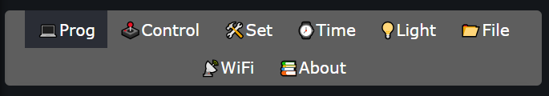
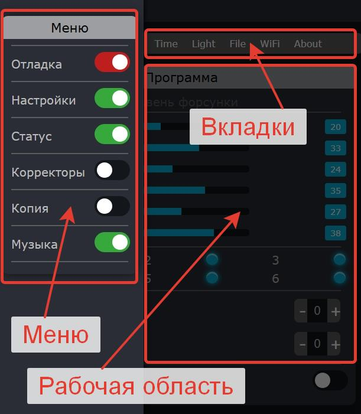
Структура интерфейса
| Элемент | Описание | Функции |
|---|---|---|
| Меню | Левая панель навигации | Доступ к разделам программы |
| Панель вкладок | Верхняя горизонтальная панель | Быстрый переход между основными модулями |
| Рабочая область | Центральная часть | Отображение текущего раздела и управление |
Программирование фонтана (вкладка PROG)
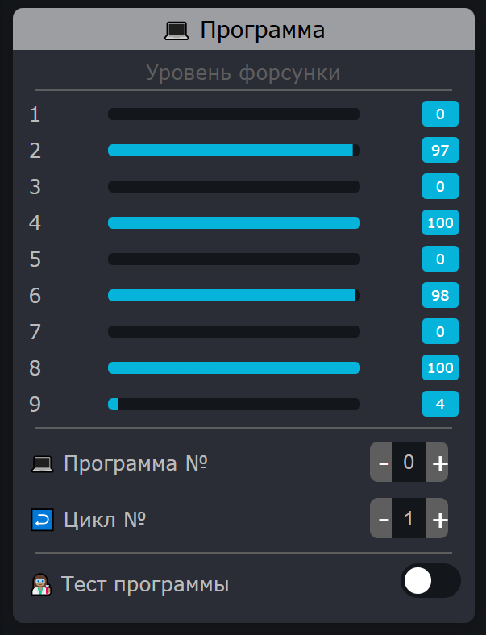
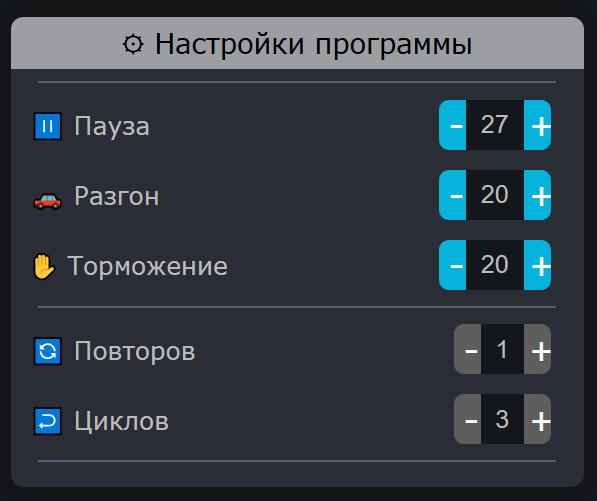
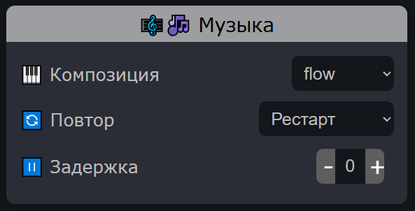
Создание программы
- Укажите частоту для каждой форсунки
- Установите паузу между циклами (в десятых долях секунды)
- Установите параметры разгона и торможения (0-20 секунд)
В режиме "Тест" можно тестировать текущую программу.
Коррекция частоты форсунок
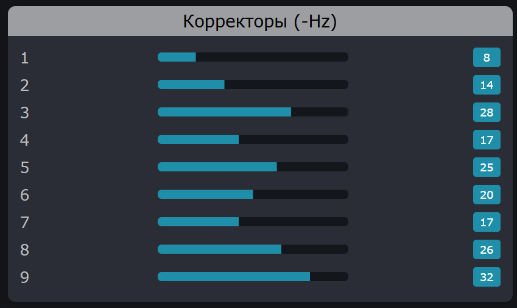
Коррекция частоты форсунок необходима, если производительность насосов отличается друг от друга. Это позволяет выровнять высоту струй и добиться синхронной работы всех форсунок.
Корректоры частоты
| Параметр | Диапазон | Назначение |
|---|---|---|
| Корректор форсунки | 0-40 Гц | Компенсация разницы в производительности форсунок |
Настройка корректоров
Коррекция влияет на все программы. Изменяйте значения осторожно!
Настройки музыкального сопровождения
Основные параметры
| Параметр | Диапазон | Описание |
|---|---|---|
| Количество треков | 0-99 | Общее количество доступных музыкальных композиций |
| Громкость | 0-100% | Уровень громкости воспроизведения |
| Режим воспроизведения | Случайно, По программе | Способ выбора музыкальных композиций |
Настройка для программы
Номера музыкальных файлов соответствую порядку размещения треков на sd карте.
Копирование программ
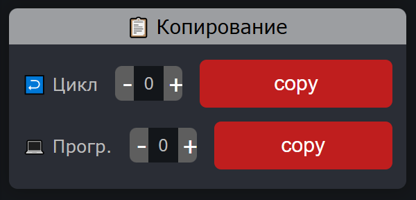
Как скопировать программу
Как скопировать цикл
При копировании в существующую программу все текущие данные будут перезаписаны!
Управление системой
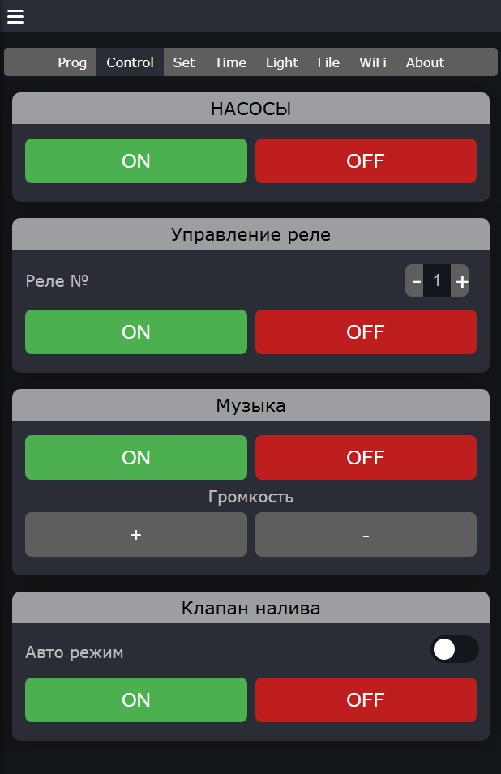
Управление насосами
| Элемент управления | Действие | Описание |
|---|---|---|
| Кнопка "ON" | Включение | Запускает все насосы согласно текущей программе |
| Кнопка "OFF" | Выключение | Останавливает все насосы |
Управление реле
| Элемент управления | Действие | Описание |
|---|---|---|
| Поле "Реле №" | Выбор | Введите номер реле (1-99) для управления |
| Кнопка "ON" | Включение | Активирует выбранное реле |
| Кнопка "OFF" | Выключение | Деактивирует выбранное реле |
Управление клапаном
| Элемент | Тип | Функция |
|---|---|---|
| Переключатель "Авто режим" | Toggle | Включает автоматическое управление по уровнемеру |
| Кнопка "ON" | Button | Ручное открытие клапана |
| Кнопка "OFF" | Button | Ручное закрытие клапана |
Основные настройки
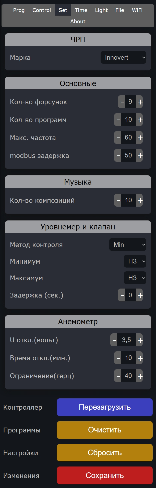
Настройки ЧРП
| Параметр | Значения | Описание |
|---|---|---|
| Марка | Innovert, Симулятор, Zuked | Выбор модели частотного преобразователя |
Основные параметры
| Параметр | Диапазон | По умолчанию |
|---|---|---|
| Кол-во форсунок | 1-32 | 9 |
| Кол-во программ | 1-50 | 10 |
| Макс. частота | 50-250 Гц | 60 Гц |
| Modbus задержка | 0-250 мс | 50 мс |
Настройки Музыки
| Параметр | Значения | Описание |
|---|---|---|
| Кол-во композиций | 0-99 | Укажите кол-во композиций |
Настройки уровнемера
| Параметр | Варианты | Описание |
|---|---|---|
| Метод контроля | Max, Min, Max/Min | Способ определения уровня воды |
| Минимум | НО, НЗ | Тип реле минимального уровня |
| Максимум | НО, НЗ | Тип реле максимального уровня |
| Задержка | 0-250 сек | Время задержки срабатывания |
Настройки датчика ветра
| Параметр | Варианты | Описание |
|---|---|---|
| U откл | 0-5 Вольт | Напряжение сработки |
| Время откл. | 0-30 минут | На какое время действует |
| Ограничение | 0-100 Герц | Верхнее ограничение частоты |
Все изменения вступят в силу сразу. Но сохранятся если нажать кнопку "СОХРАНИТЬ"
Настройки времени работы
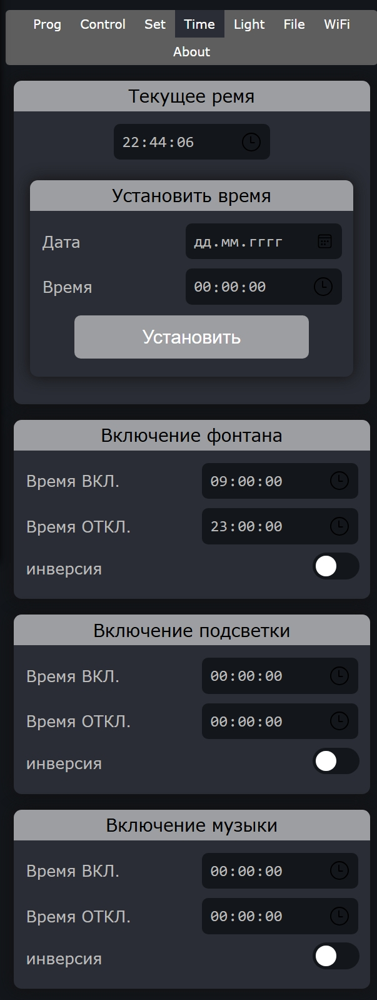
Текущее время
| Параметр | Формат | Пример |
|---|---|---|
| Дата | ДД.ММ.ГГГГ | 15.06.2023 |
| Время | ЧЧ:ММ:СС | 14:30:00 |
Расписание работы
| Функция | Время включения | Время выключения | Инверсия |
|---|---|---|---|
| Фонтан | 08:00 | 22:00 | Есть |
| Подсветка | 21:00 | 23:00 | Есть |
| Музыка | 21:00 | 21:00 | Есть |
Настройте время включения/выключения в соответствии с вашими требованиями
Управление подсветкой
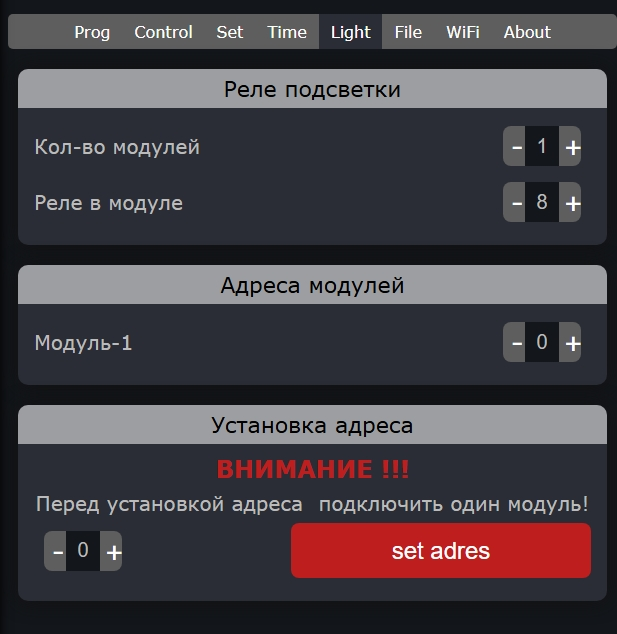
Настройка модулей подсветки
| Параметр | Диапазон | Описание |
|---|---|---|
| Кол-во модулей подсветки | 0-10 | Количество MODBUS-модулей |
| Реле в модуле | 1-8 | Количество реле в каждом модуле |
Адреса модулей подсветки
| Модуль | Диапазон адресов | По умолчанию |
|---|---|---|
| Модуль-1 | (последний ЧРП+1) - 247 | 10 |
| Модуль-2 | (последний ЧРП+2) - 247 | 11 |
| Модуль-3 | (последний ЧРП+3) - 247 | 12 |
Укажите количество модулей и количество реле в модуле. Предварительно установите адреса модулей.
Управление подсветкой RGB
Контроллер поддерживает протокол DMX для управления RGB подсветкой. Это позволяет применять модули профессионального светового оборудования.
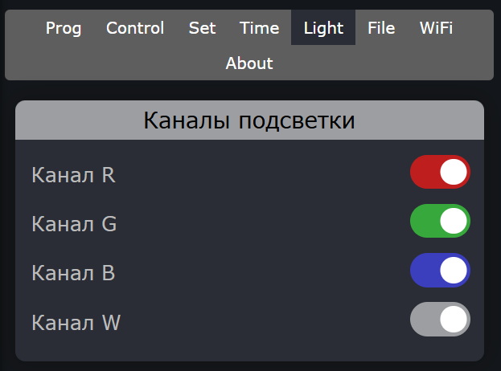
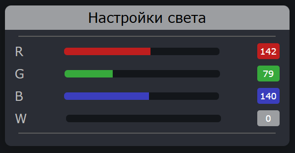
Настройка RGB модулей (вкладка Light)
| Цвет | Описание |
|---|---|
| R (Red) | Красный канал - выберите, если используется в светильнике |
| G (Green) | Зеленый канал - выберите, если используется в светильнике |
| B (Blue) | Синий канал - выберите, если используется в светильнике |
| W (White) | Белый канал - выберите, если используется в светильнике |
Отметьте только те цвета, которые физически присутствуют в ваших RGB светильниках. Это обеспечит корректную работу управления подсветкой.
Настройка цветов (вкладка PROG)
RGB подсветка синхронизирована с текущей программой фонтана.
Файловая система
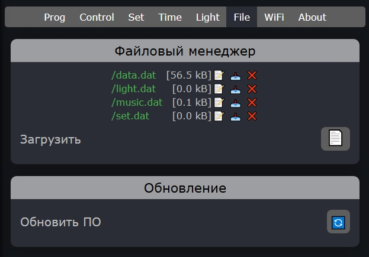
Основные функции
| Функция | Описание | Доступ |
|---|---|---|
| Просмотр файлов | Навигация по файловой системе | Чтение |
| Загрузка файлов | Добавление новых файлов | Запись |
| Удаление | Удаление существующих файлов | Удаление |
| Обновление ПО | Установка новых версий | Администратор |
Загрузка файлов возможна только через веб-браузер!
Настройка Wi-Fi подключения
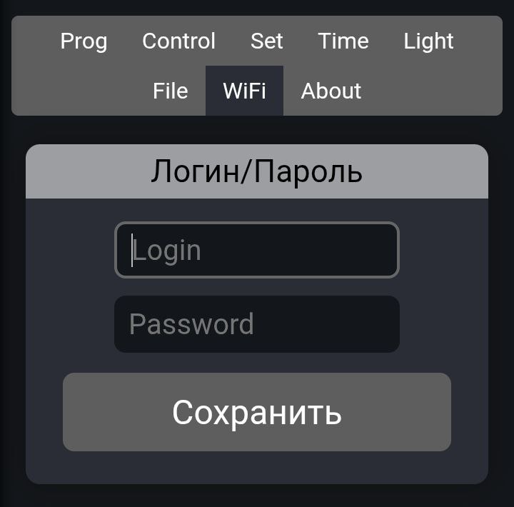
Подключение к сети
| Параметр | Описание | Пример |
|---|---|---|
| Login (SSID) | Имя Wi-Fi сети | MyWiFiNetwork |
| Password | Пароль от сети | SecurePassword123 |
Точка доступа
| Параметр | Значение |
|---|---|
| SSID | fontan |
| Пароль | ******** |
| IP-адрес | 192.168.4.1 |
Если настроена WIFI сеть то на дисплее высветится IP адрес в локальной сети. Если WIFI сеть не настроена то создаться точка доступа 192.168.4.1
О программе
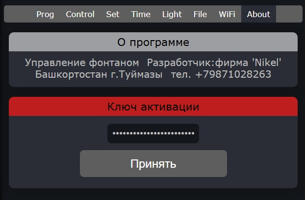
Информация о разработчике
| Параметр | Значение |
|---|---|
| Название | Система управления фонтаном Nikel |
| Версия | 2.0 |
| Разработчик | Фирма "Nikel" |
| Страна | Россия |
| Город | Туймазы, Башкортостан |
Контактная информация
| Канал связи | Контактные данные |
|---|---|
| Телефон | +7 (987) 102-82-63 |
| NikElectronics78@gmail.com | |
| Адрес | Башкортостан, г. Туймазы |
Наши продукты
Мы разрабатываем различные решения для автоматизации, электроники и 3D-печати:
ЭлИксToFIX
Диагностический модуль для аккумуляторов Makita с функцией сброса ошибок и чтения данных через WEB-интерфейс.
ПодробнееTempBot-1000
Интеллектуальная термокамера с PID-регулированием температуры и поддержанием влажности.
ПодробнееТехническая поддержка: По всем вопросам обращайтесь по email:
nikelectronics78@gmail.comРешение проблем
Проблемы и решения
| Проблема | Возможная причина | Решение |
|---|---|---|
| Нет светится дисплей | Проблемы с питанием | Проверьте напряжение питания 12 вольт |
| Не работают форсунки | Неправильные настройки | Проверьте настройки частот, включите насосы |
| Не работают реле подсветки | Неправильные адреса | Проверьте адреса устройств и целостность линии |
| Нет связи с контроллером | Неправильные учетные данные | Проверьте SSID и пароль, перезагрузите |
| Не сохраняется текущее время | Села батарейка часов реального времени | Замените батарейку CR1220 установленную на плате контроллера |
Задержка в миллисекундах между включением форсунок, а так же подсветки, считается нормальной. Так как устройства управляются по интерфейсу RS485. Задержка обсловлена modbus задержкой установленной в основных настройках
Сброс настроек
Техническая поддержка
Разработчик: фирма 'Nikel'
Адрес: Башкортостан г.Туймазы
Телефон: +79871028263
Email: nikelectronics78@gmail.com
Режим работы: Пн-Пт, 7:00-16:00 (МСК)